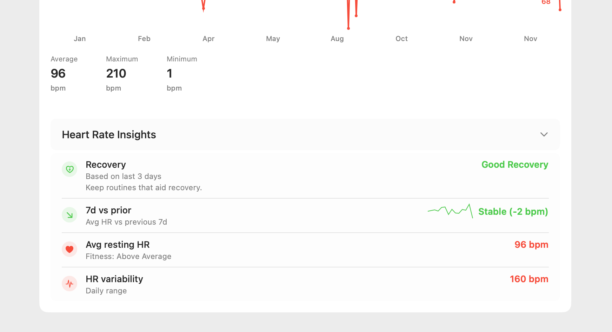

Apple Health Backup: File You Control vs iCloud
US base-app price on this site is $4.99. Confirm your price in the App Store. Pro is separate.
Apple Health backup vs iCloud vs the export guide
Backup file you control. A copy you can open and store yourself, in CSV, JSON, or XML. That is this page.
iCloud. Encrypted Health sync, not a file. Apple says Health information is encrypted while stored in iCloud and as it goes between iCloud and your device. End-to-end encryption needs iOS 12 or later and two-factor authentication. If Health syncs over iCloud, deleting data on one device removes it from the other synced devices.
Export how-to. Apple's official path is Export All Health Data, and that share is XML. The steps are on the export Apple Health data guide, not here.
Sources: Apple Support on encrypted Health data in iCloud, and Apple's iPhone guide for Export All Health Data.
Your Apple Health data is more than just numbers; it's the story of your health, fitness, and well-being. Losing this data can be devastating. While iCloud can sync Health data across Apple devices, a true Apple Health backup is a separate file you fully control.
Keep years of health history safe — save the backup file locally.
Why iCloud Health Sync Is Not a Backup File
Health in iCloud is encrypted sync between your Apple devices. It is not a file you can open, check, or store on your own.
- Sync, not a file: Apple says Health information is encrypted in iCloud and as it moves between iCloud and your device. You still cannot open that data as CSV, JSON, or XML.
- Deletes travel with sync: If Health syncs over iCloud, deleting data on one device removes it from the other devices on the same iCloud account.
- Tied to the Apple Account: The synced copy stays in Health on devices signed into that account. It is not a portable file.
- Nothing to spot-check: You cannot open an iCloud file and confirm a workout, sleep night, or reading is in it. A backup file you control can be opened.
A backup file is a copy you store yourself and can open on another computer.
The Solution: A Manual, User-Controlled Backup
Keep a backup file you control and store it where you can open it. Apple's official export path is Export All Health Data (XML). Use that guide for the steps. CSV or JSON from the app is the same idea: a file that is independent of iCloud sync.
| Backup Method | iCloud Health sync | Backup file you control |
|---|---|---|
| Control | Synced with the Apple Account | You control the file |
| Accessibility | In the Health app on synced devices, not a file | Accessible on any computer |
| Format | Not a file you can open | CSV, JSON, or XML |
| Verification | No file to open and check | Can be opened and checked |
| Where it lives | Apple devices on that account | Wherever you save the file |
Step-by-Step Guide to Creating Your First Backup
- Download "Health Data Export" from the App Store.
- Grant one-time read access to your Health data. The process is secure and runs 100% on your device.
- Choose Your Format. For maximum long-term compatibility, we recommend exporting to CSV.
- Save to a Secure Location. Use the Share Sheet to save the file to multiple locations for redundancy (e.g., iCloud Drive and an external hard drive).

We recommend performing this backup process once every 1-3 months to keep your archive up to date.
Who Needs a Dedicated Health Data Backup?
- Everyone with an iPhone: Any user who values their health history should have an independent backup.
- Users Switching Devices: If you're moving from iOS to Android, a file you control is a copy of your health history you can take with you.
- Individuals with Chronic Conditions: For those tracking important health metrics over the long term, a secure backup is essential.
Creating a backup also prepares your data for the exciting possibility of AI-powered health analysis, allowing you to discover trends in your securely archived data.
Peace of Mind with the Right Tools
Don't leave your priceless health history to chance. Take proactive steps to secure it. Our "Health Data Export" app was built with this core principle in mind: to give you full ownership and control over your digital health records.
US base-app price on this site is $4.99. Confirm your price in the App Store. Pro is separate.